Целью данной лабораторной работы является настройка менеджера паролей pass с GPG шифрованием и синхронизацией через git, а также настройка управления конфигурационными файлами домашнего каталога с помощью утилиит chezmoi.
Установили pass и gopass
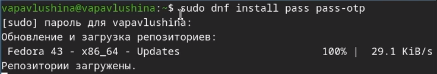
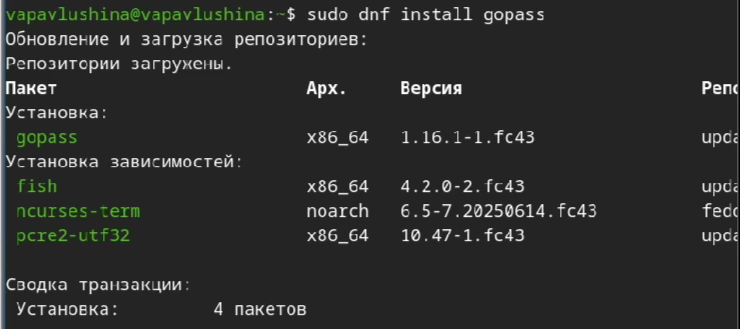
Просмотрели секретные ключи
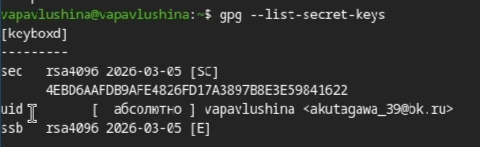
Инициализируем хранилище
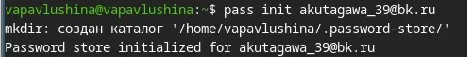
Теперь настроим синхронизацию с git. Создадим структуру git
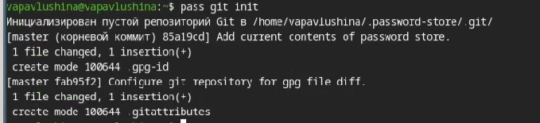
Создаём репозиторий password-store, а после задаём адрес репозитория на хостинге
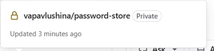
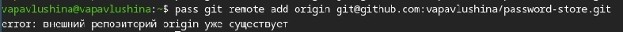
Скачиваем нужную программу
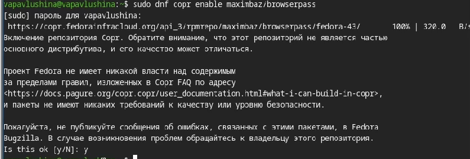
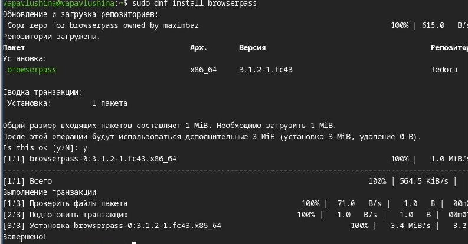
Добавляем новый пароль
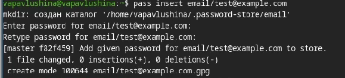
Добавили изменения в удалённый репозиторий
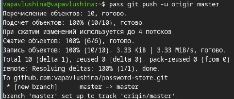
Установим дополнительное программное обеспечение - (рис. ¿fig:ris_15?)
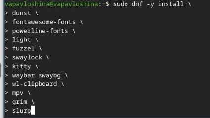
Установим шрифты
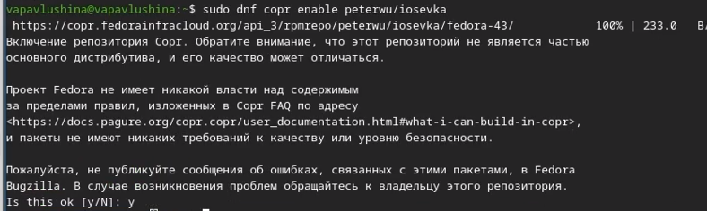
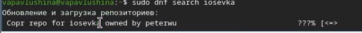
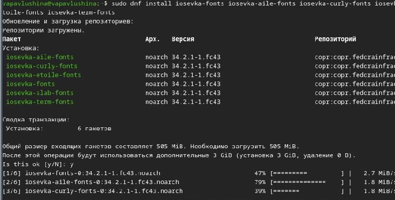
Установка бинарного файла. Скрипт определяет архитектуру процессора и операционную систему и скачивает необходимый файл
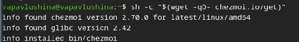
Cоздание собственного репозитория с помощью утилит.Создадим свой репозиторий для конфигурационных файлов на основе шаблона
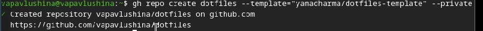
Инициализируем chezmoi с нашим репозиторием dotfiles
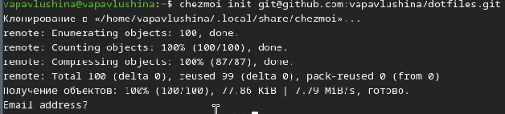
Проверяем изменения
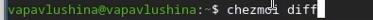
Сохраняем изменения
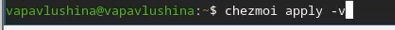
Обновляем chezmoi
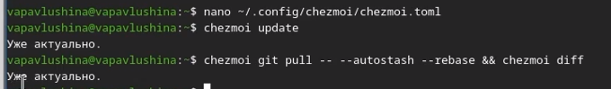
В результате выполнения лабораторной работы настроила менеджер паролей pass с GPG шифрованием и синхронизацией через git, настроила управление конфигурационными файлами домашнего каталога с помощью утилиит chezmoi.
pandocpdfmetropolispdf```yaml slide_level: 2 aspectratio: 169 section-titles: true theme: metropolis